0. 结论先行
MindVLA-U1 把四个通常割裂的问题连成一套系统：共享骨干内的语言与连续动作、可测量的语言→动作桥梁、逐帧更新的压缩记忆，以及同一权重下的快慢执行。
共享而不混写
视觉、状态、语言、记忆、噪声动作都经过同一组 Transformer；语言和动作只在输出位置由不同 head 读取。
保留自然形式
语言仍是离散自回归 token；轨迹仍是连续 flow matching，避免动作 tokenizer 的精度地板。
流式且可裁剪
历史以固定容量 memory token 传播；实时路径可物理删除答案 token，而非复制一套 VA 模型。
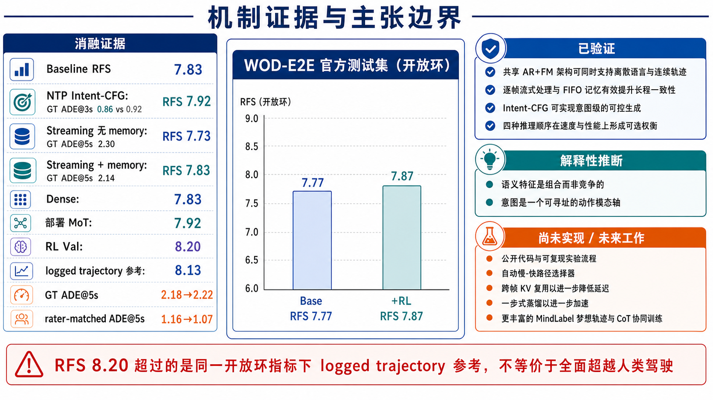
1. VLA 为什么长期落后于 VA
| 方案 | 结构问题 | 后果 |
|---|---|---|
| 轨迹量化为语言 token | 连续几何被词表离散化 | 精度地板与长 AR 时延 |
| VLM 后接独立轨迹解码器 | 动作不在共享骨干内生成 | 语言—控制梯度链变弱 |
| 独立 action expert | 动作使用另一组 attention/FFN | VLM 表征构建时缺少动作上下文 |
| 固定视频块 | 重复编码历史图像并在块边界重置 | 成本增长且轨迹可能不连续 |
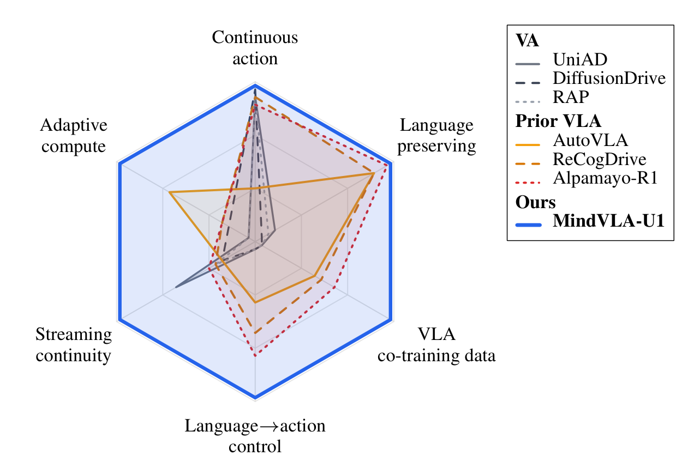
1.1 “VLA 输给 VA”常见的三个接口断点
断点 A：语义只作为旁路输出
不少系统同时报告 VQA 和 planning，但答案 token 并未进入动作生成，或者两者只共享一个冻结视觉 encoder。此时语言能力更像可视化附属品：模型可以准确描述“行人正在横穿”，规划头却未必接收到这条状态。MindVLA-U1 用共享层与 Intent-CFG 分别解决“共同表征”和“可干预控制”两个层级的问题。
断点 B：连续动作被语言格式绑架
若将 坐标量化成词表，误差下限由 bin size 决定；若按 waypoint 逐 token 自回归，又会把本应联合优化的曲线变成顺序生成。连续 flow head 让 20 个点同时可见，能直接优化几何误差，并通过少量 ODE step 并行更新。
断点 C：时间上下文与控制频率不匹配
把 8 帧图像送入 temporal VLM，计算成本会随帧数和视觉 token 数快速上升，而且每个 chunk 结束后状态被重置。驾驶却要求每帧都产生新轨迹。流式 memory 将历史成本固定为最多 256 token，使输入帧率可以不均匀，并避免“每 4 秒重新忘记一次”。
1.2 论文的组合创新，而非单点创新
共享 AR+FM、CFG、memory 和 MoT 各自都能在其他领域找到相似思想；论文的新意在于把它们围绕驾驶 VLA 的接口问题组合起来，并用统一消融说明组合后不再出现“语言更强但规划更差、时间更长但时延失控”的典型冲突。评价时应关注这种系统组合，而不是把任何单个模块包装成首次提出的通用算法。
2. 统一流式架构
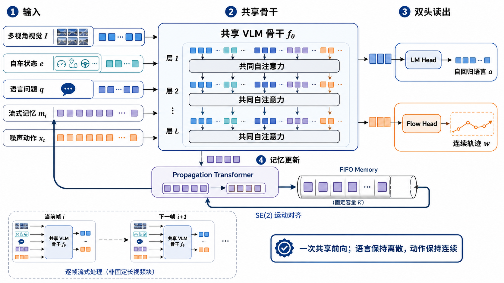
帧步 的输入包含多视角视觉 、自车状态 、问题 、对齐后的记忆 与噪声动作 。它们共同进入 。语言位置交给 LM head，动作位置交给 flow head；Propagation Transformer 再从当前 hidden state 压缩下一帧记忆。
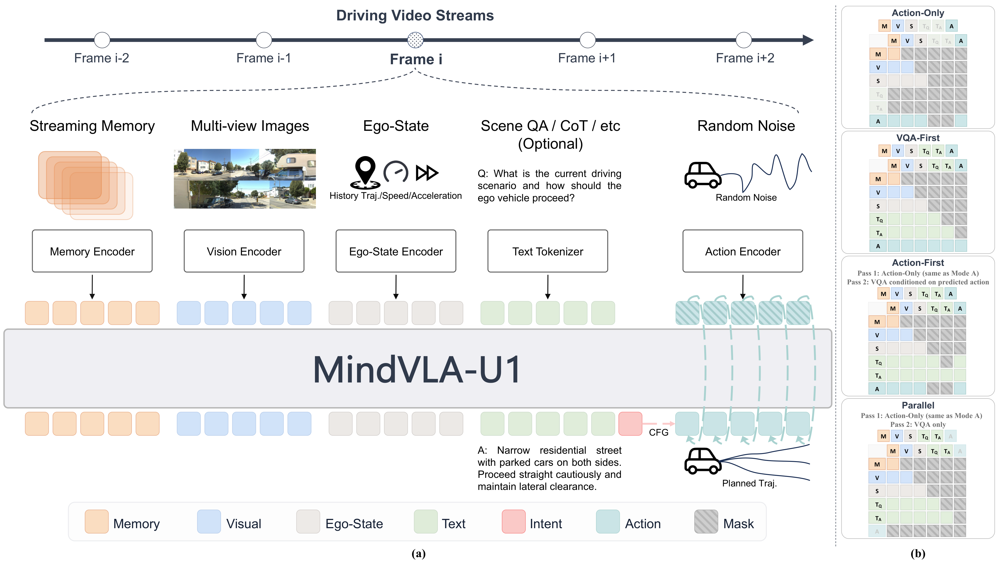
2.1 一次 frame-step 中究竟有哪些 token
“统一”不是把五种输入简单拼接后各走各的支路，而是它们在每一层都共享注意力和前馈参数。视觉 token 负责当前几何与语义，ego-history token 提供车辆自身运动边界，语言 token 承载问题、答案和意图，memory token 提供过去帧压缩状态，action token 表示当前噪声轨迹。默认骨干是 Qwen3-VL-2B，hidden size 为 2048；视觉编码器冻结，但 visual merger、语言模型、ego encoder、memory 模块和动作头共同训练。
当前 8 相机 360° 场景，经冻结 vision encoder 与可训练 visual merger。
过去 16 个状态、2 Hz；位置/速度/加速度各由一个轻量 MLP 编码。
问题与答案使用因果 mask；可承担场景 QA、intent 与解释。
每个历史 frame-step 写入 128 个压缩 token，而非原始图片。
20 个未来 waypoint 的噪声状态，动作位置内部双向可见。
2.2 输出头为什么必须“薄”
共享骨干已经完成跨模态交互，因此输出头的职责应是把对应位置的 hidden state 映射到目标空间，而不是再次建立一套独立推理网络。LM head 在语言位置输出词表 logits；action head 是 2 层 SiLU MLP，每个未来 waypoint 输出 6 维量：二维位置、二维速度和二维加速度。位置采用 delta-position 表示，即预测相邻点位移后累计得到轨迹；速度和加速度是辅助绝对通道。
Backbone
- Qwen3-VL-2B
- Hidden size: 2048
- Vision Encoder 冻结
- Merger / LM / Ego / Memory / Action 联合训练
Ego History
- 16 个历史状态
- 采样频率 2 Hz
- 位置、速度、加速度分别由轻量 MLP 编码
Streaming Memory
- 128 token / frame-step
- FIFO 保存 2 项
- 总容量 256 token
- Writer: 6 层 cross-attention / 16 heads
Action
- 20 waypoint，4 Hz，5 秒
- 每点 6D：二维位置 + 二维速度 + 二维加速度
- 2 层 SiLU MLP
- delta-position + 2 Euler steps
Optimization
- AdamW，lr 1e-4，wd 0.1
- 1000 iter warmup + cosine
- 50 epochs，BF16，ZeRO-2
- 8×H200，约 7 小时
- loss: pos 1.0 / vel 0.5 / acc 0.5
3. AR + Flow Matching：共享参数，不共享目标
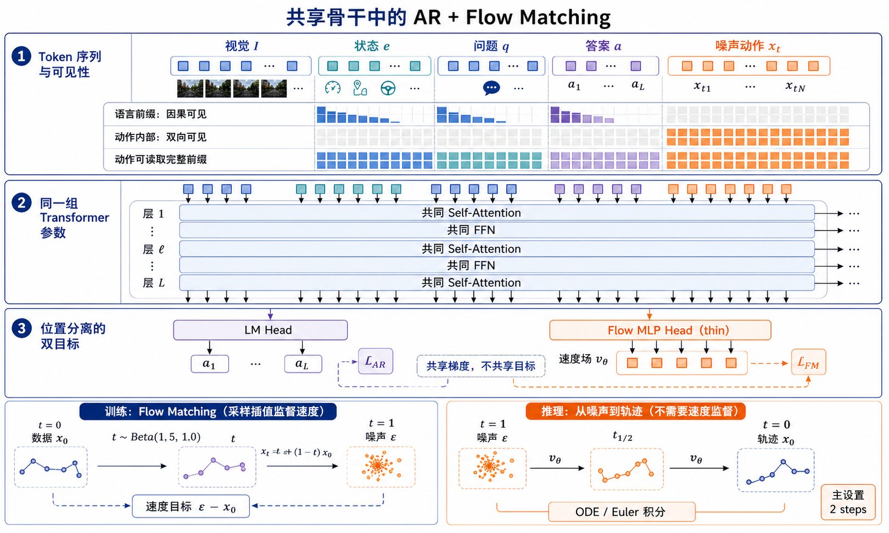
语言前缀使用因果 mask，第 个答案位置只能读 ；动作 token 彼此双向可见，并能读取完整语言前缀。因此语言保留生成语义，轨迹获得整体协同。
Time convention: is data, is noise; sample .
推理从噪声端向数据端积分，主设置仅用 2 个 Euler step，预测 5 秒、4 Hz 的位置、速度与加速度。论文事实：两种损失落在不同 token 位置和不同 head，但都更新共享骨干。解释性推断：稳定性来自监督接口隔离和场景 grounding 重叠，而不是两个 loss 天然相容。
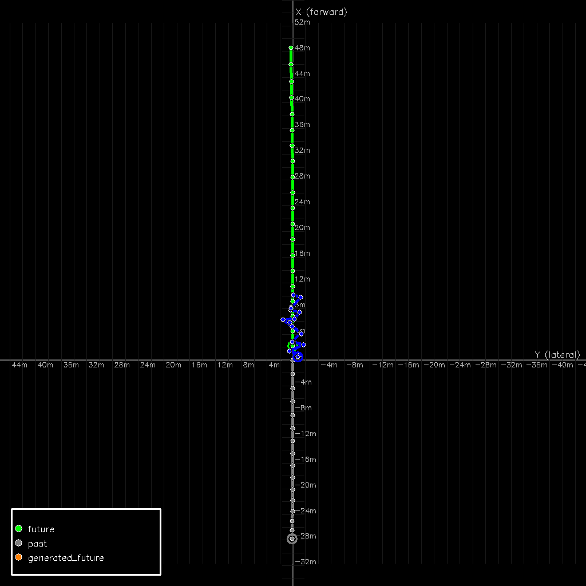
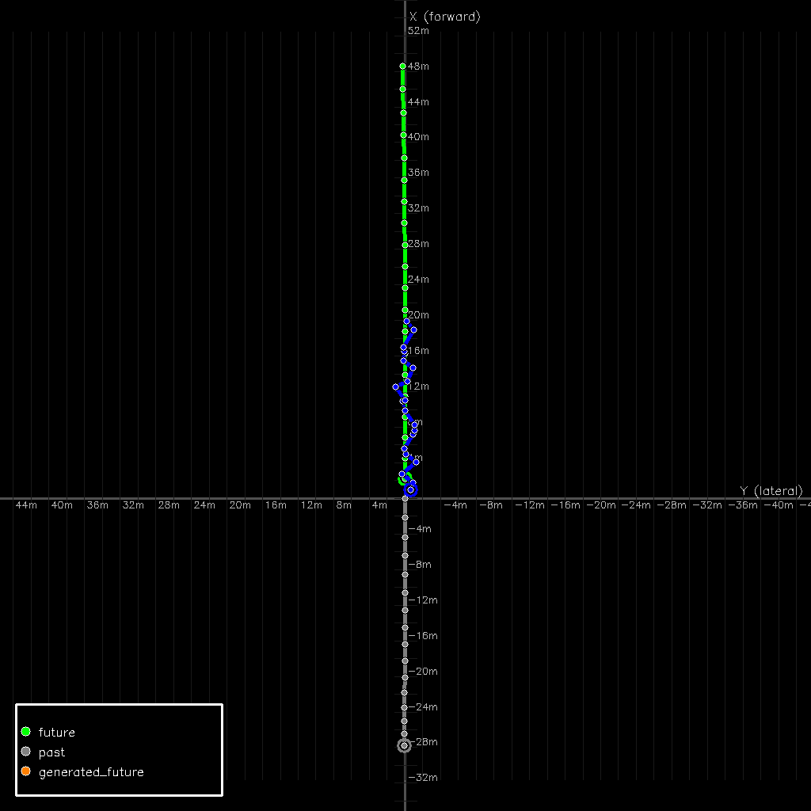
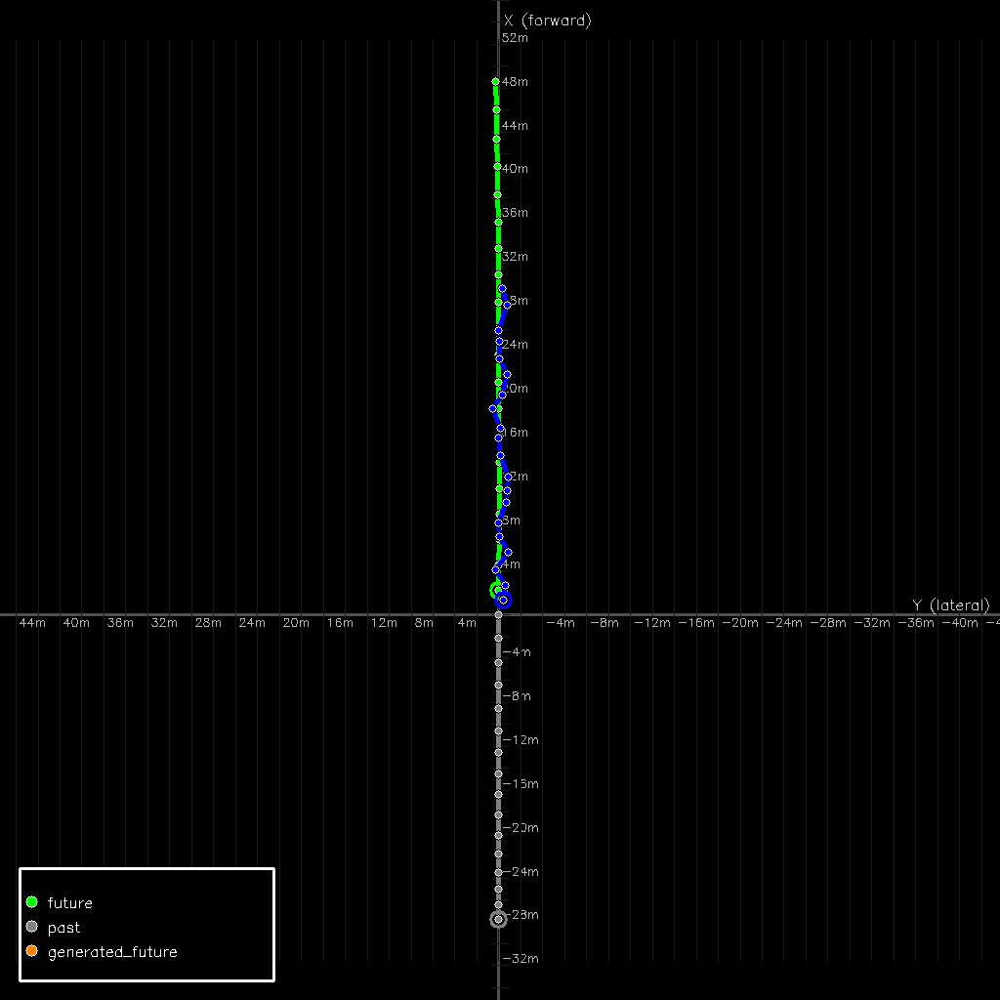
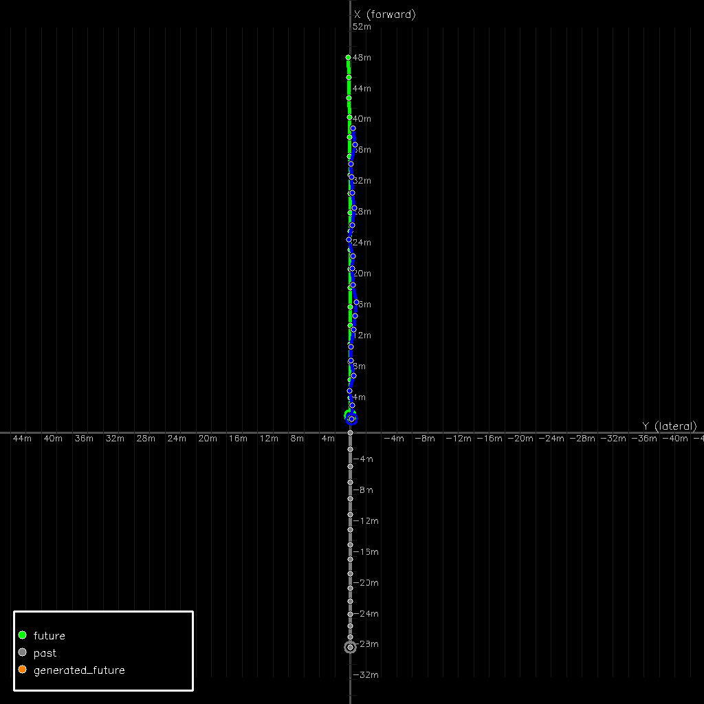
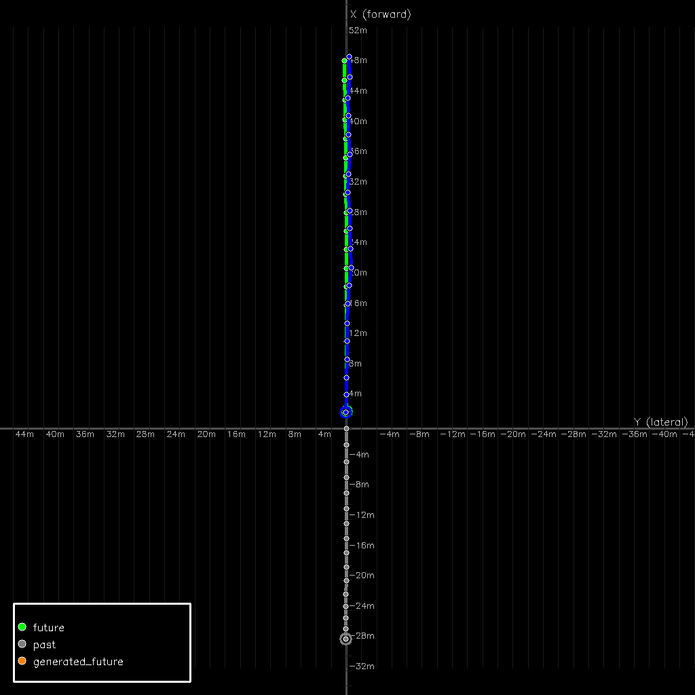
2.3 一次端到端前向的时间顺序
以当前帧到达为起点：系统先读取上一轮 FIFO 并根据自车相对运动对齐；随后编码当前 8 相机图像和 16 个 ego history state；根据运行模式拼接 question、可选 answer、memory 与 action noise；共享骨干一次处理所有位置。若启用语言，LM head 读取语言位置；若启用 intent，则预测 token 被映射到 action time embedding；flow head 在两个 Euler step 中反复读取动作位置 velocity。当前帧结束后，Propagation Transformer 再从最终 hidden state 写入 128 个 memory token。这里“单次共享前向”描述的是每个语言/动作阶段共享同一 backbone 表示，并不意味着 CFG 双分支和多 Euler step 合计只调用 backbone 一次。
贯穿实例：被遮挡前车与右转导航
帧 中前车仍可见，writer 将其低速状态压入 memory；帧 前车被大车遮挡，但导航要求右转，路口又有行人。当前视觉负责行人与车道边界，memory 提供前车历史，ego token 提供自车速度，语言 intent 提供“右转但让行”的行为模态。flow head 最终应输出先减速、保持安全距离、再进入右转曲率的连续轨迹。若清空 memory，轨迹可能更激进；若强制 straight intent，横向曲率应减小；若进入 action-only，系统仍可规划，但不生成完整解释。
3.1 Mask 如何同时服务两种生成范式
若采用 vqa_first，序列前半部分是视觉、状态、问题与答案。答案 token 只能读取此前前缀，保证标准 next-token prediction；动作 token 则读取完整语义前缀，并在动作区间内使用全可见 attention，使 20 个 waypoint 能联合调整。也就是说，语言生成关注“下一个词是否正确”，轨迹生成关注“整条曲线是否自洽”，两种可见性通过同一 attention matrix 的分块组合实现。
3.2 Flow Matching 的训练样本如何构造
真实动作 不是只有位置，还包括位置、速度、加速度三组通道。训练时采样 ，该分布比均匀分布更偏向噪声端，使模型更频繁练习从较难的高噪声状态恢复。再采样高斯噪声 ，构造 。监督速度恒为 ，但损失对三类通道使用不同权重：位置 1.0、速度 0.5、加速度 0.5。
数值例子：两步 Euler 怎么得到轨迹
假设某个 waypoint 的噪声二维位置为 ，第一次速度场预测为 。若从 到 ，步长为 ，则更新约为 。第二步再根据新状态预测速度并积分到 。真实模型对 20 个点、6 个通道并行执行，且速度场受视觉、状态、语言、记忆共同条件化。
3.3 训练目标为什么既共享又隔离
总目标写成 ，但这不意味着两个 head 互相预测对方的标签。交叉熵只作用于语言位置，MSE 只作用于动作位置；共享的是骨干梯度。一个有用的理解是：两位教师在不同答题区评分，却共同修改学生的知识体系。若场景中“左侧高速来车”被动作损失证明重要，骨干会更重视它；语言头也能从更好的场景表征获益。
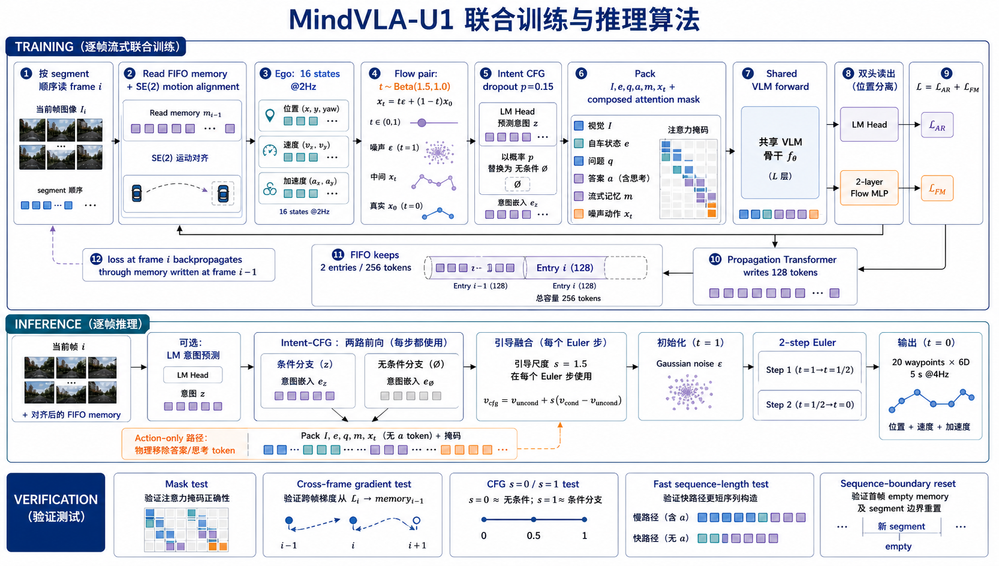
3.4 动作表示：为什么同时预测位置、速度和加速度
仅预测 waypoint 位置可以得到几何路径，却不显式约束相邻点的动力学一致性。MindVLA-U1 为每个时间点预测 。delta position 让网络聚焦局部运动增量，累计后形成全局轨迹；速度和加速度作为辅助通道，为转弯曲率、制动平顺性和长期运动趋势提供额外监督。位置权重最高，是因为 WOD-E2E 主指标直接依赖轨迹几何；速度/加速度各取 0.5，在提供运动约束的同时避免压过位置目标。
3.5 两步采样的速度—精度权衡
论文的 5-step 图是为了让读者看到轨迹如何从噪声变成曲线，并不代表主模型要运行 5 次。正式结果使用 2 步：每一步都把约 20 个 action token 追加到共享前缀，执行 backbone 和 flow head。表中单步 diffusion 约 38 ms、两步约 74 ms，几乎线性增长。一步版本可达到 15.92 FPS，但 RFS 从两步模板路径的 7.82 降到 7.67；这说明一步蒸馏仍有约 0.15 RFS 的质量空间。
如何验证动作头没有退化成“只看 ego state”
可以做三种反事实：遮蔽关键相机、交换语言 intent、清空 memory。若轨迹几乎不变，说明共享骨干虽接收多模态 token，action head 却可能只依赖 ego history；若不同条件产生符合场景约束的变化，才能证明视觉、语言和历史确实进入 velocity field。论文通过 intent 分叉与 memory 消融提供部分证据，但没有完整 causal attribution。
4. Intent-CFG：把语言变成可干预的动作轴
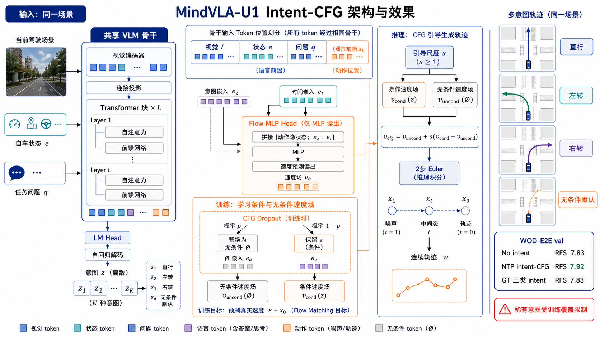
LM head 以 next-token prediction 预测意图 ，其 embedding 加入 flow head 的 time embedding。训练时偶尔用 替换 ；推理时做两次评估：
| 变体 | RFS | 3s GT ADE |
|---|---|---|
| 无 intent | 7.83 | 0.92 |
| 轨迹反推 intent | 7.81 | 0.88 |
| GT 三类 intent | 7.83 | 0.89 |
| NTP 预测 Intent-CFG | 7.92 | 0.86 |
解释：NTP intent 是共享骨干对场景理解后的内部摘要，比外部粗标签更贴合当前表征；但源码未开源，prototype-grounded refinement 无法逐行核验。
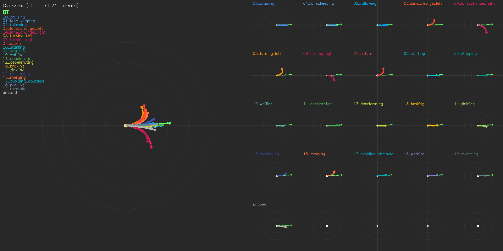
4.1 Intent conditioning 的真实实现参数
intent embedder 为每个类别存一行 embedding，并额外学习一个 unconditional row 。选中的 embedding 经过投影后，以 residual 形式加到 action MLP 的 time embedding。训练时以 0.15 概率把真实/预测 intent 替换为 ；推理时 guidance scale 固定为 1.5，并且在每个 Euler step 分别进行条件与无条件前向，再混合速度场。这意味着启用 Intent-CFG 会增加计算量，不能把 no-intent fast-path 的吞吐直接当作 Intent-CFG 吞吐。
4.2 为什么 GT intent 没带来同样收益
GT-supplied 版本使用 WOD-E2E 的 left/right/straight 三类标签，它能证明“CFG 接口可以接收外部控制”，但标签过粗：减速等待、跟车、避障等行为都可能落在 straight。NTP-predicted intent 来自当前共享表征，并搭配 prototype-grounded embedding refinement，因此更可能携带与场景语义一致的细粒度方向。论文没有公开 refinement 的原型构造、更新方式和损失项，不能进一步断言其实现。
具体场景：路口右转但前方行人占道
语言头可先预测“right / yield”一类语义状态。无条件速度场倾向数据集中的默认安全轨迹；条件速度场把轨迹模态推向右转。CFG 差分只放大“与右转 intent 相关”的速度分量，而障碍物、道路边界仍由共同视觉上下文约束。若强行输入训练中极少见的 u-turn，模型可能只学到“横向偏转”的粗方向，无法生成标准掉头，这正是作者在 20 类意图图中强调的覆盖边界。
4.3 Guidance scale 的含义与潜在失效
当 时输出完全等于无条件场； 时等于条件场； 会把条件与无条件的差向量外推。论文采用 1.5，意味着适度强化 intent。过大的 可能让轨迹过度追随语义标签而违反视觉可行性，例如明知右侧有障碍仍强转；过小则控制效果不明显。理想系统应按 intent 置信度和场景可行性自适应调节，但本文没有提供 scale sweep 或安全裁剪器。
4.4 “语言可控”与“语言解释可信”不是同一件事
Intent-CFG 证明修改语言侧 intent 会改变动作分布，这是 controllability。它并不自动证明自由文本解释忠实反映了规划因果：action_first 生成的评论可能只是对轨迹的后验描述，vqa_first 的 CoT 也可能包含与真实决策无关的文字。若要验证 faithful reasoning，需要对中间 token 做干预，观察某条理由的改变是否产生预期轨迹变化。
5. Streaming Memory 不是视频缓存
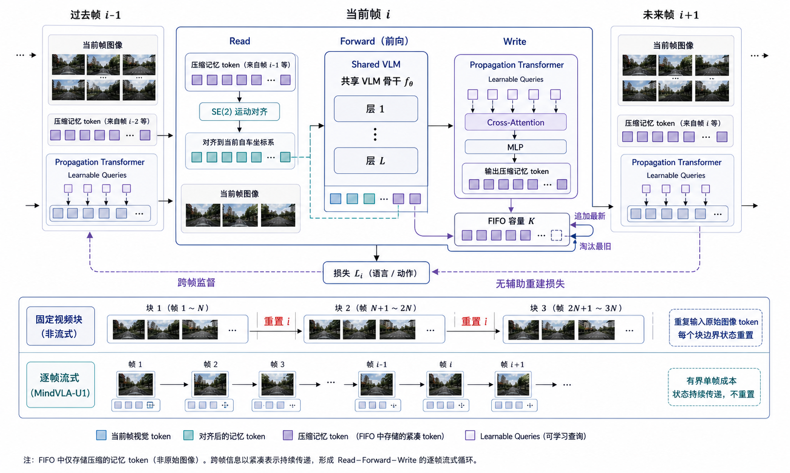
FIFO 保存的是 Propagation Transformer 压缩的 memory token，不是过去原图、完整视觉 token 或普通 KV cache。读取时根据相对自车位姿做 motion-aware 对齐；写入时 learnable query cross-attend 当前骨干状态，追加最新并淘汰最旧。
帧 的任务损失可通过 memory 回传到帧 的 writer，因此记忆由后续语言/动作任务直接塑形，无辅助重建损失。附录通过 pose chain 拼接 clips，报告 join residual 均值约 0.0011 m。
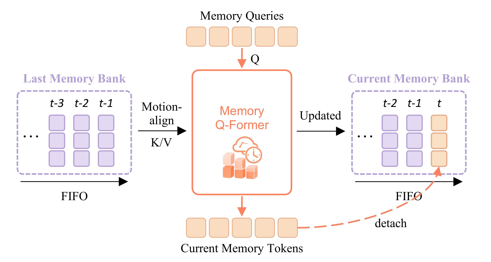
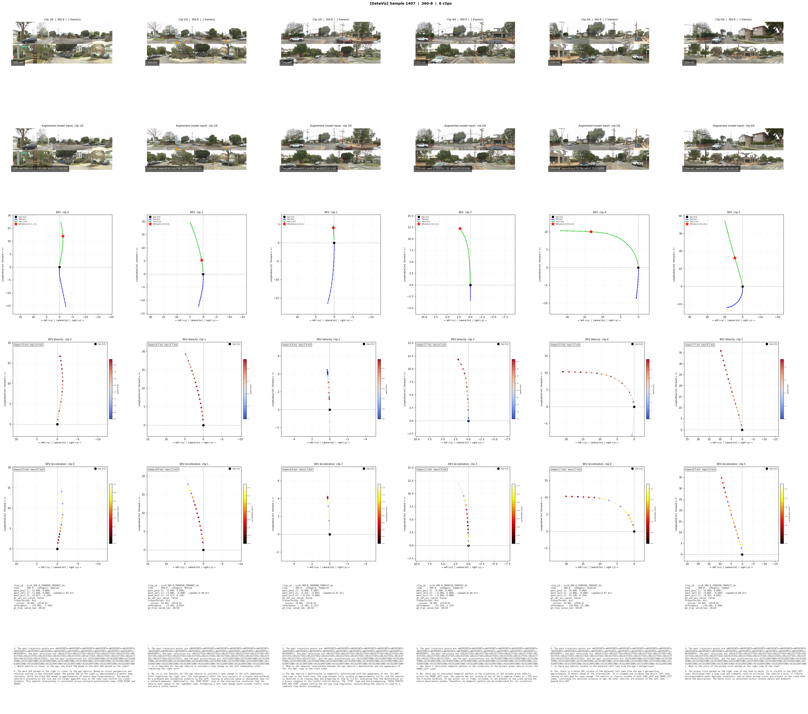
5.1 Memory 的容量与 writer 结构
容量只有两帧并不意味着只能记住两帧：第 帧写入的 token 已经读取了更早 memory，因此它是递归压缩状态。但递归也带来信息瓶颈——若 writer 没把即将被遮挡的关键对象写入，原始视觉信息一旦被淘汰便无法恢复。
5.2 Motion-aware modulation 与 SE(2) pose chain
历史 token 在旧 ego pose 下写入。读取时，论文将相对平移 与 yaw 变化 经过两层 MLP 编码，与 memory hidden state 做逐通道 affine modulation，再送入 backbone。这不是把每个 token 当成显式二维点旋转，而是用位姿条件调整其特征。训练长序列前，作者还根据相邻 clip 的重叠轨迹恢复完整 pose chain，把局部坐标统一到 segment anchor；附录报告每个 join 使用 10 个 inlier，平均残差约 0.0011 m。
5.3 跨帧梯度到底监督了什么
若帧 发生遮挡，当前图像无法看到前车，但 action loss 仍要求减速；梯度会通过被读取的 追溯到帧 的 writer，促使 writer 在前车可见时保存其运动相关信息。这里没有“重建上一帧图像”的辅助任务，所以 memory 不必保留纹理细节；它更像为未来任务选择性写入的工作记忆。
实现时的截断反传风险
工程中为了节省显存，最容易把 FIFO state 在每帧调用 detach()。这样仍能跑出“有 memory 输入”的模型，却破坏论文所述跨帧监督。复现代码应明确设置 unroll 长度、梯度检查点和序列边界 reset，并用单元测试确认帧 的 loss 能使帧 writer 参数获得非零梯度。
5.4 与 temporal VLM 的复杂度对比
设每帧视觉 token 数为 、窗口长度为 、memory 容量为 。固定视频窗口的 attention 序列包含约 个视觉 token，且每移动一步会重复处理大量历史帧；流式方案每步只处理 ，M 为常数。严格复杂度还取决于语言/action token 和 KV cache，但核心差异是历史视觉从“随窗口线性增加”变为“固定大小的任务压缩状态”。代价是不可逆压缩：temporal VLM 可以重新查看旧像素，FIFO 只能使用 writer 当时留下的信息。
5.5 非均匀时间间隔为何重要
论文强调 frame 可以以灵活甚至非均匀间隔到达。motion-aware modulation 接收相对位姿，使 memory 更新不绑定固定帧数；但若时间间隔剧烈变化，单纯位姿差可能不足以表示对象在间隔内的动态演化。复现时应把时间差 明确纳入 motion embedding 或确认原文实现是否隐含编码。论文公开文本主要说明相对平移和 yaw，没有足够细节证明对极端丢帧的鲁棒性。
6. 同一权重的 Fast / Slow
| 模式 | 顺序 | 用途 |
|---|---|---|
| vqa_first | 语言→动作 | 先语义推理再定轨迹 |
| vqa_only | 仅语言 | 问答诊断 |
| action_first | 动作→语言 | 解释已选轨迹 |
| action_only | 仅动作 | 物理删除答案 token 的实时路径 |
Qwen3-VL-2B 慢路径中：prefix 约 30 ms，VQA prefill 40 ms，2-step action diffusion 74 ms，而约 81 个答案 token 的 AR decoding 约 2450 ms，占总时延约 94%。瓶颈是语言解码而非连续动作。
6.1 四种 ordering 本质上是 attention context composition
这些模式不是四个 checkpoint，而是在训练中抽样不同 mask 和 token 顺序，让同一组权重适应多种上下文。vqa_first 把生成的答案重新放回动作条件；action_first 先得到轨迹，再允许语言 token 读取该轨迹作解释；vqa_only 不产生动作；action_only 则彻底不构造答案/思维 token。前两者改变信息方向，后两者改变是否执行某个输出阶段。
6.2 模板 QA 为什么是一个实用折中
vqa_first_fast 不做 81-token 自由解码，而使用短模板/快速语义路径，把 RFS 保持在 7.82，同时将时延从 2594 ms 降到 108 ms。它说明语言有用并不要求每帧写一段自然语言长文；部署时可以把慢语言能力放在低频安全诊断，把短语义 token 放在高频控制回路。
6.3 尚缺少的调度器
真正的 fast/slow 系统还需要一个风险选择器：例如施工、视野遮挡、紧急车辆、导航冲突时进入 slow path；普通巡航时使用 action-only。论文没有实现这个 gating policy，也没有测量模式切换的状态一致性。因此“支持四种模式”与“已经拥有自主快慢思考系统”是两件事。
6.4 吞吐数字如何公平比较
RAP-DINO 的 17.68 FPS 与 InternVL-2 1B fast 的 15.55 FPS在同一 H200、batch size 1 条件下接近，但 backbone、视觉 encoder 和实现优化不同，不能仅以 2 FPS 差距认定架构等价。Qwen3-VL-2B action-only 只有 9.70 FPS，说明参数规模和前缀长度仍显著影响实时性。论文标题所说“匹配 VA-class latency”主要依赖 matched ≈1B 配置，而不是默认 2B slow path。
6.5 低频 slow 与高频 fast 的一种可实现调度
一个工程方案是 1–2 Hz 运行 slow path，生成 scene intent、安全摘要和可缓存 context state；10–20 Hz 运行 action-only，仅更新当前视觉、ego、memory 和 action token。触发器可以结合不确定度、地图冲突、障碍 TTC 和语言请求。这个方案与作者未来提出的 context KV reuse 一致，但仍是本报告的实现建议，不是论文已完成实验。
7. Mixture-of-Transformers 不是普通 MoE
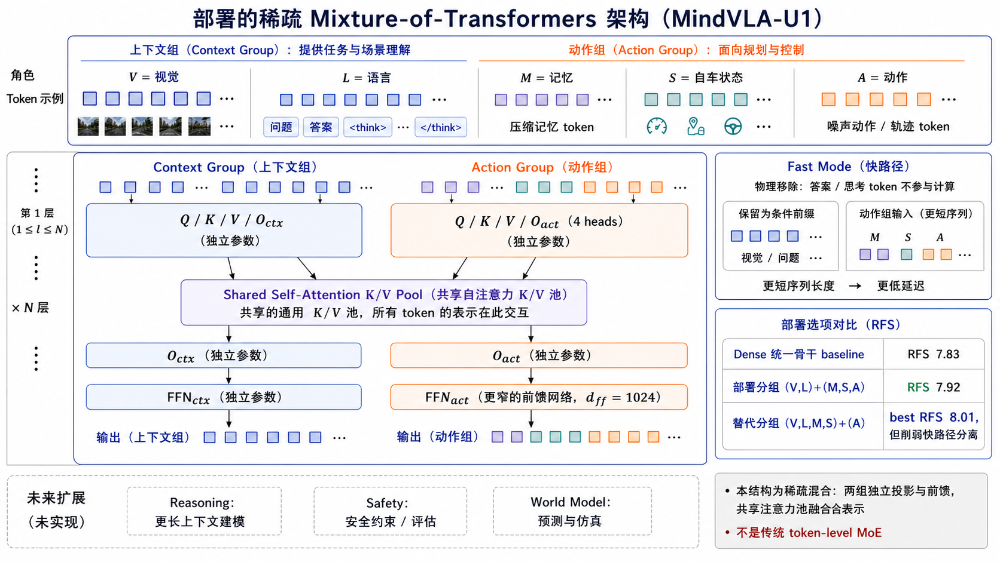
部署路由是 。两组有独立 Q/K/V/O，action 组仅 4 heads；随后进入共享 self-attention K/V pool，再分别进入 FFN_ctx 和较窄的 FFN_act（）。它没有 top-k router，不是常规 token-level MoE。
替代分组 的 best-of-seeds RFS 为 8.01，高于部署分组 7.92；作者仍选后者，因为 memory/state 与 action 形成纯 motor group，快路径的计算分离更干净。dense baseline 为 7.83。
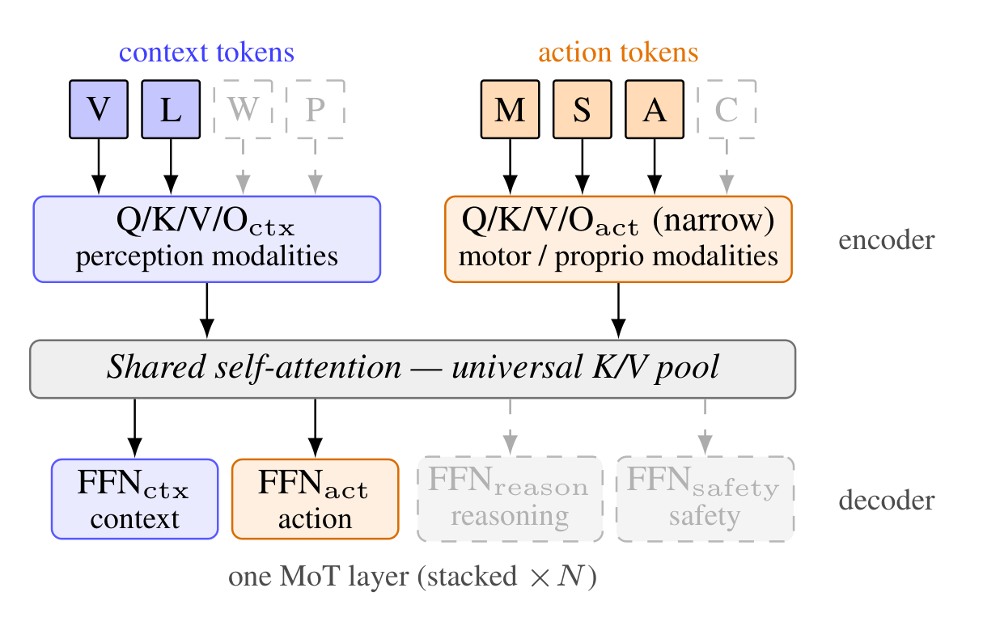
7.1 每一层具体拆了什么
两组 token 先通过各自的 Q/K/V/O 投影。context 组继承 dense backbone 的 attention head 数和 FFN 宽度；action 组只用 4 个 attention heads，FFN 中间宽度为 1024。两组投影结果进入同一个 universal K/V pool，因此 action query 可以读取视觉/语言，context query 也可读取 memory/state/action。随后再由独立 FFN 专门化。
7.2 为什么它不是普通 MoE
普通 sparse MoE 通常学习 router，为每个 token 选择 top-k FFN expert；MindVLA-U1 的路由由 token role 固定决定，没有门控概率和负载均衡损失。其目的不是用更多总参数换容量，而是形成可以在 fast mode 中真正裁剪的计算子图，并给未来的 reasoning、safety、world-model token role 预留结构位置。
7.3 8.01 与 7.92 的工程取舍
把 M/S 与视觉语言一起放到 context 组时，best-of-seeds RFS 达到 8.01；但 fast action 仍依赖 context 组处理 memory/state，计算边界不干净。部署分组牺牲 0.09 的 best RFS，换得 motor/proprioceptive token 全部落在 action group。作者的选择强调 Pareto，而非单一 leaderboard 最大值。
8. MindLabel：生成很多，主实验只用了少部分
两种标注骨干独立处理约 18.8K clips，论文估计得到约 3.8M VQA 与约 250K dreamed trajectories。主结果实际只共训练基础 scene-grounded VQA、官方 GT intent 和 logged trajectory flow loss。
8.1 标注流水线分成哪些阶段
MindLabel 先做 scene understanding question generation：包括通用事实、空间关系、时间变化、运动状态和 object-centric 问题；再做 Action Dreaming。Action Dreaming 先分析 GT 行为，再通过 affordance-guided generation（根据可行驶空间与交互约束生成）和 exemplar-guided generation（参考行为样例生成）产生多条替代轨迹；最后用统一 answer generator 输出事实回答、带单位的空间回答、包含时间点的因果回答，以及对轨迹质量的 CoT 评价。
8.2 数据规模应如何解读
| 统计 | Training | Validation | Test | Total |
|---|---|---|---|---|
| Sequences | 2,037 | 479 | 1,505 | 4,021 |
| Annotated clips / backbone | 10,542 | 3,771 | 4,515 | 18,828 |
| VQA pairs | ≈2.1M | ≈750K | ≈900K | ≈3.8M |
| Dreamed trajectories | ≈140K | ≈50K | ≈60K | ≈250K |
这些总量聚合了两个标注 backbone 的输出，并根据部分运行的每 clip 产率外推，不是逐条人工审核的固定真值。主模型只使用基础 VQA 与三类 GT intent；因此 MindLabel 更像论文同时发布的一套未来数据基础设施，而不是所有模块都已转化为当前成绩。
8.3 自动标注的噪声会如何进入模型
两个 VLM 标注器独立生成答案能提高多样性，却不等于自动获得一致真值。空间距离、遮挡关系和可行动作尤其容易受到视觉幻觉影响。主实验只使用基础 VQA，可能通过大规模平均削弱部分噪声；若未来使用 dreamed trajectory 做 preference learning，则应增加几何可行性过滤、碰撞检查、动力学约束和多标注器一致性评分。否则“更多替代轨迹”可能把不安全行为当成多模态监督。
此外，表中的 3.8M 与 250K 是依据部分运行产率外推的 aggregate count。报告和后续工作应区分 measured count、estimated count、per-backbone count 和去重后有效样本数；训练时还应披露每类 QA 的采样权重，否则高频 CoT 或 common QA 可能淹没真正影响控制的 motion/trajectory QA。
9. 实验支持了什么
Val RFS 8.20
RL 后处理；论文列出的 logged human trajectory 参考为 8.13。
Test RFS 7.87
官方测试集 RL 版本；base 为 7.77。
近 VA 吞吐
匹配约 1B 的 InternVL fast 路径 64 ms / 15.55 FPS，RFS 7.78。
RFS-only RL 将 5s rater-matched ADE 从 1.16 改善到 1.07，但 GT-matched ADE 从 2.18 变差到 2.22：模型更靠近评审偏好模态，却略远离单条日志轨迹。
| 时间建模 | GT ADE 3/5s | RFS |
|---|---|---|
| Temporal VLM chunks | 1.08 / 2.54 | 7.61 |
| Streaming，无 memory | 0.98 / 2.30 | 7.73 |
| Streaming + memory | 0.92 / 2.14 | 7.83 |
9.1 三种轨迹指标回答不同问题
RFS-GT ADE 与 logged trajectory 比较，便于对接外部 leaderboard；RFS-matched ADE 先在三条 rater reference 中选择与预测最匹配的一条，再计算距离；RFS 在速度缩放 trust region 内继承该 rater 的偏好分数，超出区域则指数衰减到底分 4。因而同一个预测可以更符合人类评审偏好，却不更接近唯一 logged GT。
9.2 RL 后训练的优化配置与代价
RL 使用 AdamW，固定学习率 、weight decay 0.1、gradient clip 0.3；PPO clip 为 ±0.2，KL 系数 0.008，使用 k3 estimator；每个样本 rollout 8 条轨迹，按组缩放 reward。RFS 在 4 Hz、5 秒 horizon 上计算。这个保守设置让 RFS 平滑上升，但只优化 rater feedback，因而出现 matched ADE 改善、GT ADE 轻微恶化的可解释 trade-off。
9.3 Validation 与 Test 的分布偏移
validation 取 RFS anchor frame，test 使用 segment 的 end-frame protocol，intent 分布显著变化：validation 中 accelerating 约 19.5%，test 仅 4.1%；waiting 从 7.6% 上升到 20.2%；following 从 2.7% 上升到 5.6%。这解释了为什么 validation 上超过 8 的 RFS 不能直接期待在 test 原样复现，也提醒 intent-conditioned 模型要关注类别先验偏移。
9.4 主结果之间不能简单横向相加
Intent-CFG、MoT 和 RL 行使用的是不同 checkpoint 或训练阶段。表格没有给出“Intent-CFG + MoT + RL”全部叠加后的统一结果，因此不能把各自提升 0.09、0.09、0.37 直接相加预测 8.58。组件可能互相增强，也可能争夺容量。特别是 RL 行不报告语言指标，且 GT ADE 变差；部署选择需要根据目标在 controllability、吞吐和 rater preference 之间重新做 Pareto。
9.5 长时一致性图能证明什么、不能证明什么
附录把 4 个连续 clips、约 17 秒、68 个 waypoint 拼到统一坐标系，四类转弯场景保持 sub-meter sequence ADE，说明局部预测在 clip 边界没有明显断裂。它不能证明车辆在闭环执行这些轨迹后仍稳定，因为下一帧输入来自日志而非模型控制后的新状态；也不能覆盖交通参与者对自车行为的交互反应。
10. Scaling：语言与动作结构性解耦
相同架构、数据和 schedule 下，Qwen3.5-VL 0.8B/2B/4B/9B 的规划指标不单调：2B RFS 7.94，4B 7.86，9B 7.84；9B 延长到 200 epoch 后为 7.91。它支持“当前设置下更大 VLM 不自动带来更好规划”，但不足以建立普适 VLA scaling law。
10.1 为什么语言指标提升没有稳定传到动作
base VLM 的 BLEU/ROUGE 明显低于 instruction-tuned VLM，但动作 RFS 接近；0.8B 到 9B 的语言质量略升，动作质量却上下波动。结构上，语言 head 与 action head 共享骨干但监督位置不同；如果训练数据没有要求复杂语义影响轨迹，新增语言容量可能只改善回答，不会自动改变 velocity field。Intent-CFG 正是在这个断点上增加显式条件通路。
10.2 真正的 scaling law 需要什么
至少需要同时扩大数据、训练 token、优化预算与随机种子，并区分 backbone parameter、视觉分辨率、memory 容量、动作头容量等轴。当前表格只改变 VLM size，且 9B 需要延长到 200 epoch 才接近较小模型，因此更适合视为“瓶颈诊断”，而不是规模规律。
11. 源码未开源时的复现蓝图
for frame in sequence:
memory = motion_align(fifo, relative_SE2_pose)
x_t, t, target_v = sample_flow_pair(gt_waypoints)
tokens, mask = pack(I, ego, q, answer, memory, x_t, ordering)
hidden = shared_vlm(tokens, mask)
L_ar = CE(lm_head(hidden[language_pos]), answer)
L_fm = MSE(flow_head(hidden[action_pos], t, intent), target_v)
new_memory = propagation_transformer(queries, hidden)
fifo.append_and_evict(new_memory)
backward(L_ar + L_fm) # 保留跨帧 memory 梯度最容易复现错的三处
- 论文约定 为数据、 为噪声，ODE 积分方向必须一致。
- 若每帧 detach memory，就失去下一帧任务监督上一帧写入的核心机制。
- 只改 mask 而不删除答案 token，功能可能正确但不会得到真实 fast-path 吞吐。
11.1 建议的模块接口
| 接口 | 输入形状/状态 | 输出 | 关键断言 |
|---|---|---|---|
| Ego encoder | 16×(pos,vel,acc), 2 Hz | ego token | 三类状态分别编码 |
| Memory reader | ≤256 token + relative pose | aligned memory | 首帧为空；序列边界 reset |
| Shared VLM | I/e/q/a/m/x_t + mask | H=2048 hidden | 动作 token 穿过全部层 |
| Action MLP | 20 action hidden + t + intent | 20×6 velocity field | 2 层 SiLU；无独立 attention |
| Memory writer | 128 learnable queries + hidden | 128 memory token | 6 cross-attn layers / 16 heads |
11.2 训练循环的工程顺序
- 按完整 segment 顺序加载 frames，并通过 pose chain 恢复相对位姿。
- 读取 FIFO，按当前 ego pose 调制历史 memory。
- 构造 AR 答案与 flow pair；按训练抽样选择 ordering 与 CFG dropout。
- 执行一次共享 backbone；分别在语言/动作位置计算 loss。
- 用 propagation queries 写入 128 token；FIFO 超过两项时淘汰最旧项。
- 在设定 unroll 范围内联合反传，再进入下一帧；序列结束后清空状态。
11.3 可验证的最小测试
- Mask test：语言位置看不到未来答案，动作位置能看到所有动作 token。
- Gradient test：帧 loss 对帧 writer 参数梯度非零。
- Coordinate test：纯平移/纯旋转 synthetic pose 的 memory modulation 与轨迹拼接方向正确。
- Fast-path test：删除 answer token 后实际 sequence length、latency 和显存下降，而不仅是输出被忽略。
- CFG test： 等价无条件场， 等价条件场，且每个 Euler step 都进行双分支混合。
11.4 完整训练配置清单
| 项目 | 论文配置 | 复现注意 |
|---|---|---|
| Optimizer | AdamW, lr 1e-4, wd 0.1, β=(0.9,0.999) | 用于主 SFT/联合训练，不是 RL 阶段 |
| Schedule | 1000 iter warmup + cosine, min lr=0.1×max | 记录实际总 iteration，避免 epoch/step 混淆 |
| Training | 50 epochs, BF16, ZeRO-2, 8×H200, ≈7 h | 数据预处理和 I/O 会影响墙钟 |
| Flow loss | pos 1.0 / vel 0.5 / acc 0.5 | 确认归一化尺度，否则权重不可直接迁移 |
| Intent CFG | dropout 0.15, guidance 1.5 | 每个 Euler step 运行 cond/uncond |
| RL | lr 5e-7, KL 0.008, PPO ±0.2, 8 rollouts | 独立于主训练配置 |
11.5 无源码条件下的证据优先级
最高优先级是 TeX 中明确的公式、维度和表格；其次是项目页图片与附录定性图；再次是根据 Transformer 常规实现推导的接口；最低是对未公开 prototype refinement、mask 构造代码和 motion modulation 细节的猜测。复现日志应为每个决定标记来源，避免半年后把“当时的合理假设”误记成“作者实现”。
12. 局限与最终判断
- 集中在 WOD-E2E 开放环评测，缺少多数据集、闭环仿真与实车验证。
- 稀有 intent 数据不足，CFG 可产生方向正确但不标准的动作。
- Intent-CFG 需要条件/无条件两次评估；主吞吐表多为 no-intent。
- MoT 使用 best-of-seeds，随机方差需要更多报告。
- KV 复用、一步蒸馏、自动快慢选择、更多专家和完整 MindLabel 共训练均属未来工作。
证据源：官方 arXiv PDF/TeX、官方项目页及论文图。G1–G7 均在当前任务内生成，不复用历史资产。
12.1 证据强度分级
已直接验证 架构可联合训练、主要消融、开放环轨迹指标、吞吐测量。 合理推断 memory 可能保存遮挡对象状态、NTP intent 更贴合共享语义空间。 尚未验证 实车闭环安全、自动快慢调度、跨帧 KV cache、更多专家和完整 MindLabel 共训练。
12.2 对后续研究最有价值的问题
- 如何用 probing 或 causal intervention 识别 memory token 实际存储的对象、时序和规则信息？
- 如何在不运行两次完整 backbone 的情况下蒸馏 Intent-CFG？
- 如何让 slow-path 低频推理结果成为 fast-path 可持续复用的状态，而不是每帧重新解码？
- 如何在闭环模拟中评估 rater preference 与安全约束冲突时的行为？
12.3 部署时最需要监控的 failure signals
记忆陈旧
若历史对象已离开视野，memory 仍持续影响轨迹，会出现 stale state。可监控 memory attention、位姿间隔与预测轨迹对清空 memory 的敏感度。
意图压过可行性
CFG scale 过强时，条件模态可能压过障碍约束。可比较 conditional、unconditional 与 guided 三条轨迹的碰撞/舒适度差异。
语言延迟失控
自由答案长度异常会直接拖慢控制。应设置 token budget、超时回退和 action-only watchdog，不能等待语言完成才恢复控制。
模式切换不一致
slow path 与 fast path 可能对同一场景给出不同轨迹。调度器应检查切换前后轨迹连续性，并保留紧急制动等硬安全层。
整体而言，MindVLA-U1 的价值更接近一份系统架构提案与强实证原型：它已经证明关键接口能够工作，但距离可审计、可闭环验证、可量产部署的驾驶基础模型仍需要源码、更多数据集、长期闭环和安全层证据。
12.4 本报告的结论审计清单
- 所有实验数字均来自论文表格或附录；没有将多个独立组件提升相加。
- 所有源码相关内容均标为接口级蓝图；没有虚构 repository、class 或 function。
- “超过人类”始终限定为同一 WOD-E2E 开放环 RFS 下超过 logged trajectory reference。
- 灰色 future expert、自动调度、KV reuse、一步蒸馏和完整 MindLabel 共训练均未写成已实现功能。
- 图中模块位置、采样分布、数据集名称、开放环属性和 dense/MoT 类别已经过逐图复核。